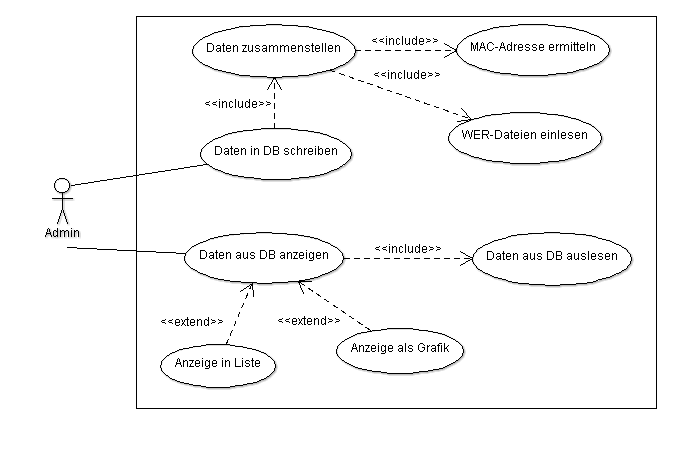

Admin-Tool¶
Ein UseCase-Diagramm zum bisherigen Verlauf könnte wie folgt aussehen.
Datenanbindung unter .NET¶
Unabhängig von der verwendeten Programmiersprache müssen für eine Datenbankverbindung folgende Informationen vorhanden sein.
- IP-Adresse/Name des Datenbank-Servers
- Die Definition des jeweiligen SQL-Befehl
- Die Ausführung des jeweiligen Befehls
- Die Verwaltung der zurückgelieferten Ergebnisse
- Die Anzeige der Ergebnisse in besonderen Controls
Innerhalb des .NET-Frameworks werden diese Informationen durch Objekte, deren Methoden sowie entsprechende Steuerelemente.
Weiterhin muss der entsprechende Datenbank-Treiber eingebunden werden.
#Bibliothek einbinden
[void][system.reflection.Assembly]::LoadFrom("C:\Program Files (x86)\MySQL\MySQL Connector Net 6.6.5\Assemblies\v2.0\MySql.Data.dll");
#Erste Einrichtung der Datenbankverbindung
$connstring = "Server=localhost;Uid='root';Pwd='';Database=drwatson";
$con = New-Object Mysql.Data.MysqlClient.MysqlConnection;
$con.ConnectionString = $connstring;
$DataSet = New-Object System.Data.DataSet
############################################################################
#Neu: Dataadapter muss bereits hier erzeugt werden, da bei Änderungen etc. auf diesen zurückgegriffen werden
#muss, damit das dann später benutzte Commandobjekt darauf zugreifen kann.
#Siehe: file:///C:/Fp/OpenBooks/C%20Sharp/Visual%20C%20Sharp%202012/1997_35_001.html#dodtp44f9b504-b660-4f2e-bd26-072f4a498332
$SqlAdapter = New-Object MySql.Data.MySqlClient.MySqlDataAdapter
#Verbindung öffnen
function verbindungOeffnen()
{
$con.Open();
Write-Host "Datenbankverbindung geöffnet"
}
#Verbindung schließen
function verbindungschliessen()
{
$con.Close();
Write-Host "Datenbankverbindung geschlossen"
}
#Computerdaten besorgen
function getReportModel()
{
#Verbindung öffnen
verbindungOeffnen
#SQL-Statement eingeben
$SqlQuery = "select * from tbl_report"
#Commandobjekt anlegen und Connectionobjekt sowie Abfrage zuordnen
$SqlCmd = New-Object MySql.Data.MySqlClient.MySqlCommand;
$SqlCmd.CommandText = $SqlQuery
$SqlCmd.Connection = $con
#Datenadaptar instantiieren und Commandreferenz zuweisen
$SqlAdapter.SelectCommand = $SqlCmd
#Dataset leeren, sonst werden die alten Daten noch angezeigt
$DataSet.Reset()
#Dataset instantiieren und füllen lassen
$SqlAdapter.Fill($DataSet)
#Verbindung schließen
verbindungSchliessen
}
function updateDatenbankModel()
{
verbindungOeffnen
$commandbuilder = new-object MySql.Data.MySqlClient.MySqlCommandBuilder $SqlAdapter
$SqlAdapter.UpdateCommand = $commandbuilder.GetUpdateCommand()
$SqlAdapter.InsertCommand = $commandbuilder.GetInsertCommand()
$SqlAdapter.DeleteCommand = $commandbuilder.GetDeleteCommand()
$null = $SqlAdapter.Update($DataSet)
verbindungSchliessen
}